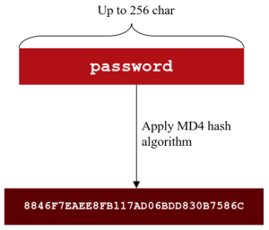

NT algorithm
NT Hash (also called NTLM hash)From Windows Vista
and Windows Server 2008 password hashes by default are stored only as NT hash in the SAM database.
This
configuration anyway can be altered and is possible to store the LANMAN hash for backward compatibility with older
infrastructures, but such a configuration is not common.
How NT
Hash is created starting from user's password:1. password is converted to UNICODE Little Endian
to have a charset much wider
2. password is hashed using MD4, to get a 16-byte long hash
PRO:
- Case is preserved
- Passwords can be up to 256 characters long
Here we can find a generator:
◇
https://asecuritysite.com/encryption/lmhash ◇
https://asecuritysite.com/encryption/md2